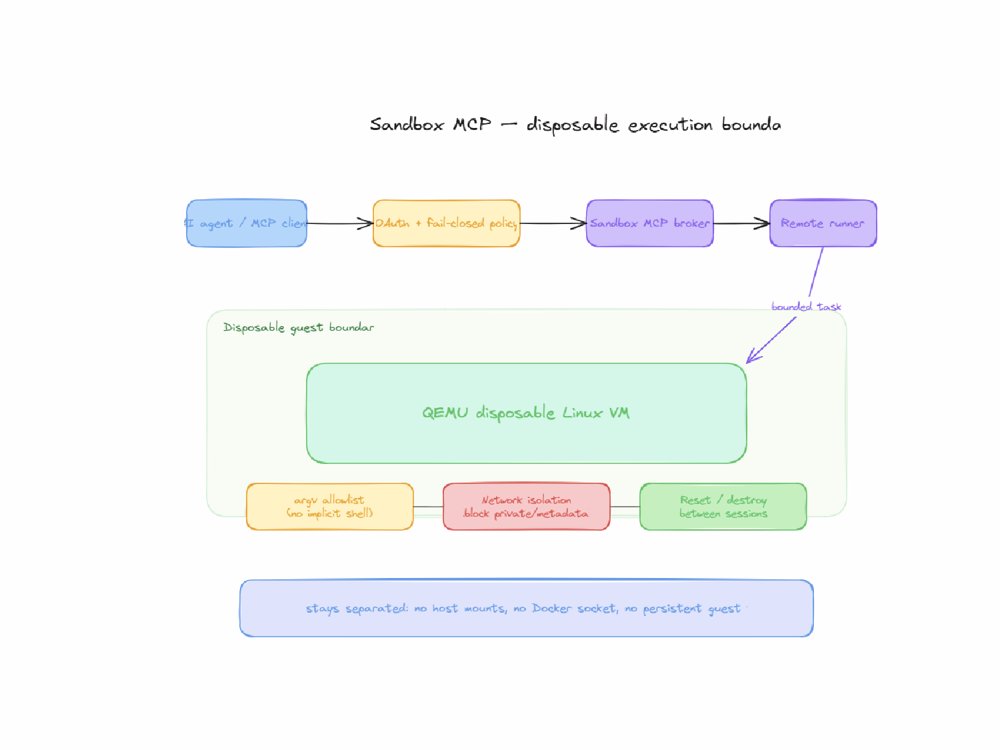

01 / LE RISQUE DE DÉPART
Le risque de départ
Un agent peut avoir besoin d’exécuter un script, installer une dépendance ou analyser un fichier qu’il ne maîtrise pas. Donner accès directement à la machine qui l’héberge mélange données fiables, code non fiable et identifiants sensibles.
L’objectif était donc de construire une zone d’exécution détruisible après usage, sans partager l’environnement principal ni exposer ses accès.
02 / COMMENT ÇA MARCHE
Comment ça marche
Le client passe par une interface MCP authentifiée avec des outils explicitement déclarés. Un service prépare la tâche et la transmet à un runner distant. Celui-ci gère une session QEMU Linux sur disque jetable et communique avec un petit agent dans la VM.
Les actions sont bornées : lancer un programme avec une liste d’arguments validée, consulter des sorties paginées, transférer des fichiers dans des limites prédéfinies, annuler ou détruire la session. Aucun outil absent de la politique n’est accessible.

03 / CHOIX ET COMPROMIS
Choix et compromis
L’invité n’obtient pas les secrets ni les montages de l’hôte. Le réseau et les privilèges sont restreints ; le cycle de vie de la VM est contrôlé. Les commandes sont transmises sous forme d’arguments, pas comme des chaînes arbitraires interprétées par un shell.
Sur l’infrastructure concernée, l'accélération KVM n'était pas disponible : QEMU bascule en émulation TCG. C’est un compromis réel de performance, mais il évite de prétendre disposer d’une virtualisation accélérée qui n’existe pas.
04 / L’ERREUR À ÉVITER
L’erreur à éviter
Un script peut s’achever correctement tout en ayant calculé la mauvaise chose. La sandbox sépare « process_succeeded » de « objective_verified ». Même un exit code 0 ne valide pas le résultat attendu. L’isolation et la réussite fonctionnelle sont deux propriétés différentes.
05 / PREUVES ET LIMITES
Preuves et limites
L’architecture provient d’un dépôt privé dont le code n’est pas publiquement inspectable. Le schéma Excalidraw déjà présent illustre l’organisation conceptuelle. Il ne s’agit pas d’une certification de sécurité ni d’un benchmark de performance.
06 / ENGINEERING
Trois choix qui changent le résultat
VM jetable
Séparer code exécuté et machine d'administration; détruire la session après usage.
Surface MCP minimale
Scopes de lecture/écriture et outils avec tailles, délais et arguments bornés.
Compromis assumé
QEMU TCG lorsque KVM n’est pas disponible.
07 / NEXT
Ce qu'il reste à démontrer
Les prochaines preuves utiles seraient un protocole d’essais d’évasion, des mesures TCG/KVM comparables et des tests de concurrence et de nettoyage.